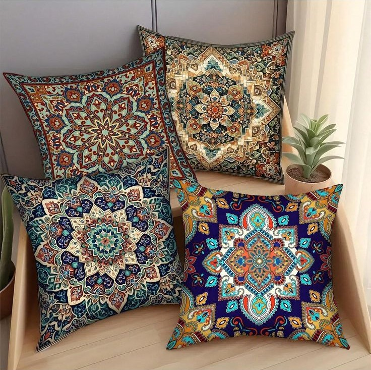
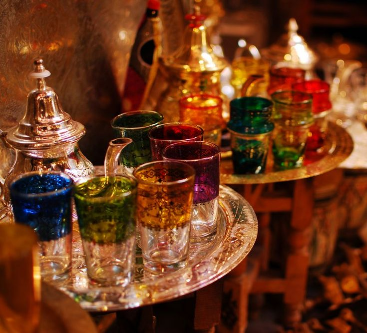
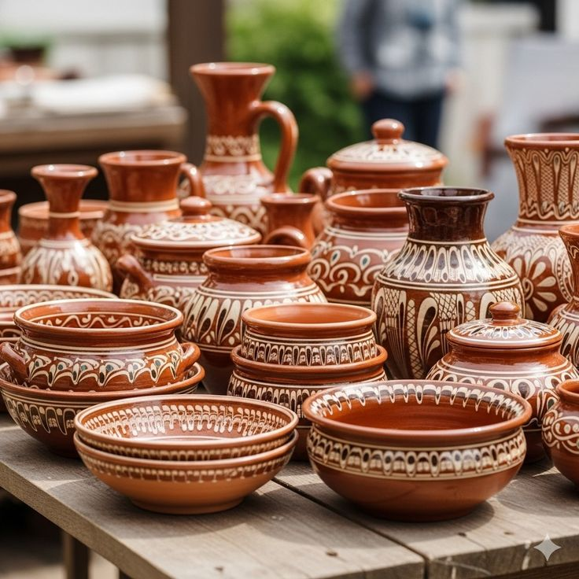
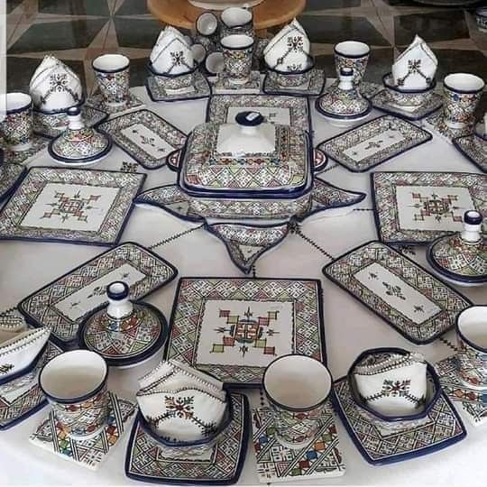
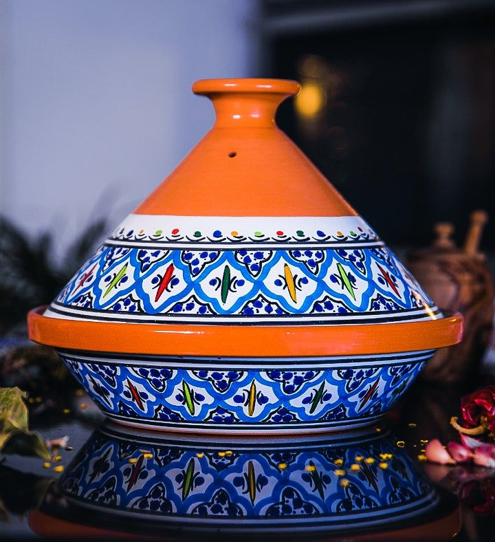
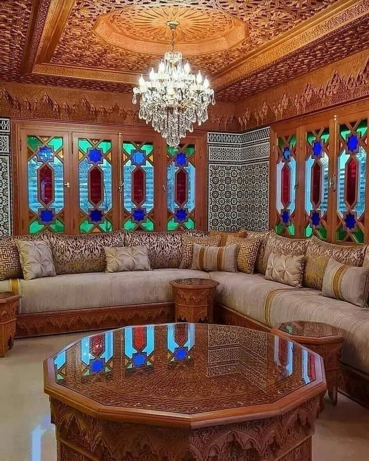
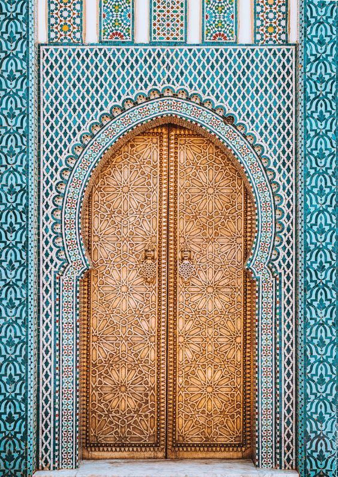
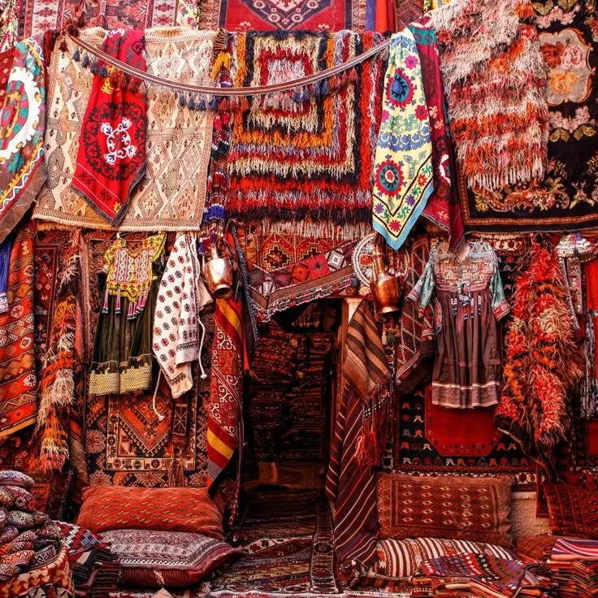

Collezione Marrakech

Marrakech Majorelle esclusiva collezione di tessili d'arredo, simbolo del calore e dell'eleganza dei Riad di Marrakesh. 100% Design d'Autore: Motivi mandala caleidoscopici che fondono geometria sacra e arte tessile. Dettagli Preziosi: Stampe ad alta definizione con pigmenti vibranti, dal blu cobalto all'oro speziato. Atmosfera Orientale: Un mix di decori arabo-andalusi progettati per trasformare il living in un'oasi di comfort. Custom & Unique: Ogni pezzo può essere personalizzato scegliendo il tessuto preferito e la dimensione desiderata per adattarsi perfettamente ai tuoi spazi. Autenticità: Creazioni uniche su misura che richiamano i ricami millenari e i colori dei souk del Marocco.
€70,00

L'autentico rituale dell'ospitalità marocchina, un’esplosione di luce e colori per la tua tavola. Design Imperiale: Un set composto da una teiera finemente cesellata e bicchieri in vetro artigianale, decorati con motivi dorati che riflettono la luce come gemme. Palette "Rainbow Medina": Bicchieri in tonalità vibranti dal blu zaffiro al verde smeraldo, dal rubino all'ambra per un'esperienza visiva indimenticabile. Artigianato d'Eccellenza: Ogni pezzo è modellato a mano, simbolo della maestria degli artigiani del metallo e del vetro. Pezzo Unico Custom: Come per tutta la linea Majorelle, puoi richiedere combinazioni di colori personalizzate per i bicchieri, rendendo il tuo set unico al mondo. Atmosfera da Mille e una Notte: Ideale per trasformare un semplice tè in un momento di puro lusso orientale.
€110,00

L'eleganza primordiale della terra marocchina, modellata dal fuoco e dal tempo. Riflessi d'Argilla: Una collezione in terracotta autentica, dove ogni pezzo cattura la luce calda del tramonto sulle mura di Marrakech. Geometrie Ancestrali: Decori bianchi stesi a mano che danzano sulle forme sinuose di vasi, ciotole e anfore, richiamando simboli millenari. Pezzo Unico al Mondo: Ogni manufatto è un'opera singola; le piccole variazioni nella cottura e nel tratto rendono il tuo acquisto irripetibile. Total Custom: Scegli la forma e la capienza ideale per le tue esigenze; creiamo pezzi su misura che si adattano perfettamente al tuo spazio. Essenza Materica: Un ritorno alle origini dell'artigianato, perfetto per chi cerca un design organico, caldo e profondamente umano.
€85,00

L’arte della tavola imperiale, disegnata a mano e cucita sui tuoi desideri. Sinfonia di Geometrie: Motivi mandala e arabeschi complessi che trasformano ogni pezzo in un tassello di un mosaico millenario. Libertà Creativa Custom: Un set che non ha limiti. Puoi scegliere il numero di pezzi, la forma dei piatti e la palette di colori per creare una tavola che esiste solo a casa tua. Pezzo Unico al Mondo: Ogni pennellata è eseguita a mano libera; l'unicità del tratto garantisce un prodotto "One-off" impossibile da replicare in serie. Dettagli Smaltati: Finiture lucide e colori vibranti che resistono nel tempo, portando l'eleganza dei palazzi di Marrakech nel tuo quotidiano. Eccellenza Artigianale: Ceramica di alta qualità modellata e decorata dai maestri di Fes e Marrakech, icone del design mediterraneo.
€300,00

L'arte del gusto si veste di un ricamo eterno, per una tavola che incanta i sensi. Savoir-Faire a Tavola: Una Tajine artigianale dove la precisione del pennello imita la delicatezza di un ago, creando trame geometriche vibranti. Atelier Custom: Progetta la tua Tajine ideale; puoi personalizzare la palette di colori e scegliere le dimensioni del piatto per un pezzo unico che parli di te. Pezzo Unico "One-Off": La decorazione manuale garantisce che ogni sfumatura di blu e arancio sia irripetibile, rendendo il tuo acquisto un'opera d'arte esclusiva. Lusso Sensoriale: Una ceramica lucida che riflette la luce, trasformando ogni ricetta in un momento di pura eleganza marocchina. Legame di Design: Il "filo" conduttore della nostra collezione che unisce la funzionalità della cucina alla bellezza del decoro sartoriale.
€150,00

L'eccellenza dell'abitare: un intero universo artigianale cucito attorno ai tuoi sogni. Sinfonia di Intrecci: Dai cuscini rifiniti a mano alle trame del tavolo ottagonale, ogni elemento è parte di un unico grande ricamo spaziale. Architettura Custom: Una creazione totale e su misura; progettiamo ogni dettaglio, dalle dimensioni dei divani ai motivi delle piastrelle dipinte a mano, per un ambiente unico al mondo. Legno e Luce: Il soffitto e le pareti in legno intagliato "cuciono" la luce del lampadario di cristallo in un gioco di ombre e riflessi regali. Pezzo Unico "Signature": Non una semplice stanza, ma un'opera "One-off" irripetibile, dove l'artigianato di Marrakech raggiunge la sua massima espressione sartoriale. Atelier dell'Abitare: Ogni salone è un progetto esclusivo, cucito punto per punto dai nostri maestri artigiani per trasformare la tua casa in un palazzo.
€20.000,00 - €100.000,00

L’ingresso che definisce il valore della tua dimora: un mosaico di piastrelle uniche e un portale cucito nel legno e nell'oro. Ricamo di Pietra: Migliaia di piastrelle dipinte a mano formano una trama infinita, un ricamo che avvolge l'ingresso con la precisione di un tessuto regale. Il Portale d'Oro: Porta in legno massiccio con intagli "sartoriali" che richiamano la lucentezza dell'oro, creando un contrasto magnetico con il blu delle piastrelle. Creazione Custom Totale: Progettiamo l'intero portale su misura; puoi scegliere il disegno delle piastrelle e la finitura della porta per un pezzo "One-off" senza eguali. Materiali Immortali: Un connubio di ceramica, legno pregiato e dettagli che richiamano il ferro battuto, studiato per durare nei secoli. Savoir-Faire Monumentale: Ogni centimetro è lavorato a mano libera, garantendo l'unicità assoluta di ogni singola geometria.
€25.000,00

L'essenza del Marocco cucita a mano: una collezione dove il filo si trasforma in un'opera d'arte da calpestare o indossare. Trame Millenarie: Tappeti e cuscini realizzati al telaio, dove ogni ricamo segue pattern tribali che sono la firma autentica dei maestri tessitori. Abiti "One-Off": Capi tradizionali ricamati con fili di seta e lana, pezzi unici sartoriali che vestono la persona di cultura e lusso artigianale. Sinfonia di Fibre: Un mix materico di lana, cotone e filati naturali, intrecciati per creare un'esperienza tattile calda e avvolgente. Colori dell'Anima: Pigmenti naturali che spaziano dal rosso zafferano al blu profondo, "cuciti" insieme in geometrie che illuminano ogni ambiente. Custom Atelier: Possibilità di commissionare tappeti su misura, scegliendo la densità dei nodi e il "racconto" dei decori per un investimento eterno.
€1.500,00
{kind=link}
{kind=link}
{kind=link}
{kind=link}
{kind=link}
{kind=link}
{kind=link}
{kind=link}